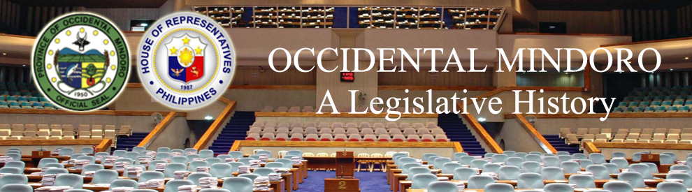

| History |
| Legislators |
| Laws |
| About |
OCCIDENTAL MINDORO
The following text/information are lifted from the book of Lee W. Vance entitled Tracing your Philippine Ancestors which was published in Provo, Utah by Stevenson’s Genealogical Center in 1980 and Symbols of the State by the Department of Interior and Local Government of the Republic of the Philippines in 1998.
The province of Occidental Mindoro occupies the western portion of Mindoro Island, located just slightly northwest of the center of the Philippine Archipelago, and just south of the island of Luzon. It is bounded on the east by its sister province, Oriental Mindoro, and the waters off is coasts are the Verde Island Passage to the north, and the Mindoro Strait on the west and south.
Following is a timeline1,2 of events that led to the creation and development of the province of Occidental Mindoro:
DATE |
EVENT |
|
Mindoro was already well-settled by Tagalogs and Mangayans – a Malay-derived tribe living primitively in the interior highlands – before the arrival of the Spaniards. Their settlements were prosperous, and carried on a thriving trade with Chinese merchants. In fact, when Juan de Salcedo and Martin de Goiti first explored the island while enroute to Manila in 1570, they found two trading junks loaded with general merchandise anchored in Baco River. The Spaniards must have felt they had made a rich find by discovering Mindoro, for they called it “Mina de Oro”, or “gold mine”, which later was shortened to Mindoro. Its previous name had been “Mait”. |
|
Don Miguel Lopez de Legazpi, then in the process of transferring his national capital from Panay to Manila, stopped at the northern coast of Mindoro, and succeeded in bringing the people under Spanish sovereignty. |
|
Christianity first came to Mindoro via the Augustinians, who first arrived in 1572 and opened a mission at Baco. But the natives revolted to them and imprisoned the friars, who were soon after forced to leave |
|
2 Franciscans were assigned to the province of Balayan and Mindoro |
|
Jesuits were assigned to the province |
|
Mindoro was created and became part of the territorial jurisdiction of “Balayan” (or “Bombon”) province, now known as Batangas province |
|
Mindoro was separated from Balayan (Batangas) and made into a corrigimiento with Puerto Galera as its capital. Its territory then included Mindoro and its small dependent islands, and also Marinduque, Ylin, and the Lubang Islands. |
|
Continuous struggle against Moro pirates, who pillaged and burned entire towns, and murdered or enslaved its inhabitants. The Moros established strongholds at Mamburao and Balete (abandoned by their original inhabitants) from which they sailed forth to attack the settlements of Mindoro, Luzon and the Visayas, razing entire districts and enslaving those captives who were not put to the sword. |
|
Recollects followed. The early centers of missionary activity were established in Baco, Calavite, Naujan, Abra de Ilog, Mangarin and Calapan. |
|
A successful expedition led by Don Jose Gomez captured the Moro stronghold at Mamburao, effectively eliminating Moro control over the island. The grateful natives, gradually forgetting their fears of the conquered Moros, returned to the abandoned settlements along Mindoro’s coasts. |
|
The Lubang Islands were annexed to Cavite province. |
|
The capital was transferred from Puerto Galera to Calapan |
|
Mindoro had already been made a politico-military province. |
|
Mindoro remained nominally under the Philippine Revolutionary government after the evacuation of the Spaniards |
|
Occidental and Oriental Mindoro formed the single province of Mindoro, so they share the same history |
|
American troops landed in Calapan and occupied the island |
|
Civil government was extended to Mindoro when it, together with the Lubang Islands (separated from Cavite), was annexed to Marinduque province by virtue of Philippine Commission Act 423 |
|
Mindoro was organized as a separate “regular” province from Marinduque. It included the Lubang Islands within its jurisdiction, and its provincial capital was transferred back to Puerto Galera from Calapan by virtue of Philippine Commission Act 500 |
|
The municipality of Bongabon, province of Mindoro was incorporated as a barrio of the municipality of Pinamalayan, province of Mindoro by virtue of ACT NO. 1135 |
|
The remaining fifteen municipalities of Mindoro were reduced to eight by consolidating Looc with Lubang, Palauan and Abra de Ilog with Mamburao, Puerto Galera with Calapan, Pola with Pinamalayan, and Mansalay and Mangarin with Bulalacao by virtue of Philippine Commission Act 1280 |
|
Mindoro’s status was changed from a regular province to a “special” province, and the capital was again transferred back to Calapan by virtue of Philippine Commission Act 1396. On the same day, the former municipalities were changed in status to townships and Rancherias or settlements by virtue of Philippine Commission Act 1397. |
|
The island of Maestre de Campo was annexed to Mindoro province from Romblon by virtue of Philippine Commission Act 1665 |
|
The townships were restored to their status as municipalities and municipal districts by virtue of Philippine Legislature Act 1824 |
|
The evolution of Mindoro province was completed when it was restored as a “regular” province, with its capital remaining at Calapan by virtue of Philippine Legislature Act 2964 |
|
The municipality of Concepcion, on Maestre de Campo Island, was annexed to Mindoro from Romblon by virtue of Philippine Legislature Act 3131 |
|
The municipality of Concepcion, on the island of Maestre de Campo was segregated from the province of Romblon, and was annexed to the province of Mindoro, and for other purposes by virtue of ACT NO. 3131 |
|
The districts of Bongabong and Puerto Galera, province of Mindoro, were reorganized as municipalities by virtue of ACT NO. 3415 |
|
An act to reorganize the municipality of Bulalacao and the municipal district of Baco, in the province of Mindoro was reorganized by virtue of ACT No. 3498 |
|
By virtue of COMMONWEALTH ACT NO. 28, the name of the barrio of Payompon, municipality of Sablayan, province of Mindoro, was changed to that of Buenavista. |
|
By virtue of COMMONWEALTH ACT NO.29, the name of the barrio of Gumalpong, municipality of Baco, province of Mindoro, was changed to that of Santa Rosa. |
|
The whole island has been under the care of the Divine World Fathers (SVD). |
|
The separation of the eastern and western halves of Mindoro and their organization into the two provinces of Oriental and Occidental Mindoro, occurred when REPUBLIC ACT 505 was approved. At that time, the province of Oriental Mindoro consisted of the municipalities of Baco. Bungabo, Bulalacao, Calapan (the capital), Mansalay, Naujan, Pinamalayan, Pola, Puerto Galera, Roxas and San Teodoro. The province of Occidental Mindoro consisted of the municipalities of Abra de Ilog, Looc, Lubang, Mamburao (the capital), Paluan, Sablayan, San Jose and Santa Cruz. |
|
By virtue of REPUBLIC ACT 4732, the municipality of Calintaan in the province of Mindoro Occidental was created |
|
The municipality of Magsaysay in the province of Occidental Mindoro was created by virtue of Republic Act 5459 |
|
By virtue of REPUBLIC ACT 5460, the municipality of Rizal in the province of Occidental Mindoro was created. |
|
The current municipalities of this province are: Abra de Ilog, Calintaan, Looc, Lubang, Magsaysay, Mamburao, Paluan, Rizal, Sablayan, San Jose, and Santa Cruz. |
Sources:
1 Vance, L. W. (1980). Tracing your Philippine ancestors. Provo, Utah: Stevenson's Genealogical Center.
2 Velasco, C. R. and Untivero, R. G. (1998). Symbols of the State. Manila: National Media Production Center.

Congressional Library Bureau
Legislative Library Service